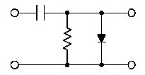

Q.1 What is the function of a clamper circuit?
A) Regulate the DC voltage output level .
B) Limit the amplitude of any waveform to a predetermined level.
C) Change the reference level of a signal.
D) Limit the frequency to a predetermined value.
Ans : C
Q.2 What is the function of the capacitor and resistor in an unbiased clamper?
A) Provide the output reference of the clamper circuit.
B) Produce a long time constant.
C) Provide the input reference to the circuit.
D) Produce a short time constant.
Ans : A
Q.3 What is the purpose of the forward biase diode in an unbiased clamper?
A) Produce a short time constant with the capacitor.
B) Produce a long time constant with the capacitor.
C) Shunt the signal to ground.
D) Provide the input reference to the circuit.
Ans : C
Q.4 What is the function of a bias in a clamper circuit?
A) Produce a short time constant with the capacitor.
B) Produce a long time constant with the capacitor.
C) Provide the input reference to the circuit.
D) Provide the output reference to the circuit.
Ans : A
Q.5 What type of clamper circuit is illustrated below?
A) Positive clamper

B) Neagtive clamper
C) Positive clamper with bias
D) Neagtive clamper with bias
Ans : A
Sources
[PDF]